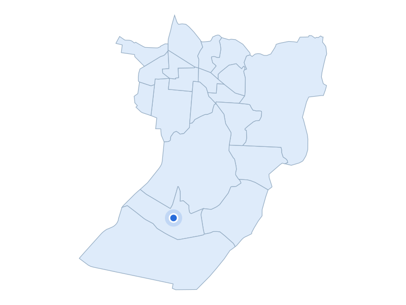

부동산 데이터 | 신혼부부가 사는 곳
거주 수 16위 · 인천 남동구

소래습지생태공원 갈대밭·탐방데크
실제 장소 자료사진 · 촬영 2025
주거·생활권을 실제 장소와 함께 비교합니다
거주 신혼부부 · 2024년
7,997쌍
주거 특징·랜드마크
남동구 논현동에는 논현웰카운티처럼 2000년대에 입주한 아파트 단지가 있습니다.
주거 특징·랜드마크
소래습지생태공원은 갯벌과 습지, 탐방데크를 갖춘 생태공원입니다.
주거 특징·랜드마크
공원 안에는 옛 염전을 활용한 학습장도 있어 해안의 생태환경과 염전의 흔적을 함께 살펴볼 수 있습니다.

인천 남동구 · 실제 가격 집계구역
파란 점: 단지 위치
지역 아파트 실거래 중위값
4억 2,850만원
지역 거래 632건
단지 사례
논현 파크 포레
3억 9,000만원
단지 거래 20건
2026-05-01 ~ 2026-10-31 계약
전용 83~85㎡ · 아파트 매매 · 취소 제외
편집 대표시안 · provisional · 실측 타이밍 대기